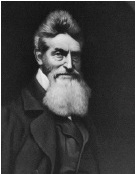

John Brown (1800-1859), bir köle isyanını tetikleme girişimi sebebiyle Virginia eyaleti tarafından 1859’da idam edilen, militan bir köle karşıtı eylemciydi. Askerî açıdan Brown, tam bir başarısızlıktı, ama toplumsal bir hareket olarak ayaklanması köleliğin kaldırılması taraftarlarına bağlılığını gösterdi. Bir avuç dolusu taraftarıyla Brown, Virginia, Harper’s Ferry’de bir federal cephaneliği, bölgedeki kölelerin sahiplerinden kaçıp kurtulacağına ve ona katılacağına dair saf bir inanca kapılarak ele geçirdi. Ayaklanma hiçbir zaman gerçekleşmedi ve birkaç gün içinde yakalandı. Kısa bir süre sonra da asıldı.

Brown, 1800’lerin başından beri mütemadiyen büyüyen kölelik kurumunun kaldırılması hareketinin şiddet kanadına aitti. 1859’la beraber çoğu Kuzeyli köleliğe karşıydı, ama pek azı Brown’ın aşırı taktiklerini benimsedi. Abraham Lincoln’ün de içinde olduğu birçok ılımlı Kuzeyli, köleliğin yayılmasına son verilmesini umut etti, ama köleliğin derhal kaldırılmasını talep etmenin ötesine geçmediler. Brown ve Boston’daki önde gelen kölelik karşıtı William Lloyd Garrison gibi radikaller, kabul edilemez bir ahlâkî kötülük olarak gördükleri köleliğin derhal kaldırılmasını istediler. Ilımlılara saldıran Garrison, “Evi yanan bir adama ılımlı bir alarm vermesini söyleyin.” diyerek kinayeli bir çıkış yaptı.
Bu arada Güneyliler, Kuzeyli liberal işgüzarlar gibi, her iki kölelik karşıtı kampı da dikkate aldı. Birçok Güneyliye göre kölelik, İncil tarafından emredilmişti ve ayrıca Güneyin tarım ekonomisi için vazgeçilmezdi. ABD Senatosu’nda başkan yardımcısı olarak görev yapan Güney Carolina’nın seçkin siyaset adamı, köleliği tümüyle kötü değil, ama “olumlu bir iyi” olarak adlandırdı. Güneyde Brown’ın baskın haberleri yaygın bir paniği ve kuşkuyu tetikledi. Brown’ın ayaklanması askerî olarak başarısızlığa uğradı, ama siyaseten başarılıydı. Dehşete düşmüş pek çok Güneyli, Kuzeyden ayrılmanın köleliği elde tutmanın tek yolu olduğu sonucuna vardı. Abraham Lincoln, Kuzeyli kölelik karşıtlarının desteği ile 1860 seçimini kazandı. Güney eyaletleri sonunda köleliğe son veren İç Savaş’ı ateşleyerek birlikten çekildiler.
Brown’ın kölelik karşıtı hareketi, bugüne dek tartışmalı hâlde kalmıştır. Modern tanımıyla Brown, şüphesiz bir teröristti. Harper’s Ferry’den birkaç yıl önce Kansas’taki bir çatışmada Brown ve oğulları köleliği destekleyen bir aileyi öldüresiye kesip biçmek için palalarını kullandılar. Ama Brown’ın terörizmi, bugün neredeyse herkesin haklı gördüğü bir davaya hizmet etti.
EK BİLGİLER:
1. Brown, Connecticut ve Ohio’da katı Hıristiyan bir baba tarafından büyütüldü ve açıkça kölelik karşıtlığını dine dayandırdı. Virginia’da darağacında Brown “Ben John Brown, bu suçlu ülkenin suçlarının ancak kanla temizleneceğinden artık oldukça eminim. Şimdi de daha önceki gibi düşünüyorum; bu kadar çok kan dökülmeseydi kendimi boş yere övmüş olurdum.” dedi.
2. İç Savaş sırasında Birlik askerleri, “John Brown’ın Bedeni” adında bir yürüyüş şarkısını söylediler. Bostonlu bir köle karşıtı olan Julia Ward Howe şarkıyı duydu ve yeni sözler besteledi. Şarkısı “Cumhuriyetin Muharebe İlahisi”, en sevilen Amerikan vatansever şarkılarından biri olarak kalmıştır.